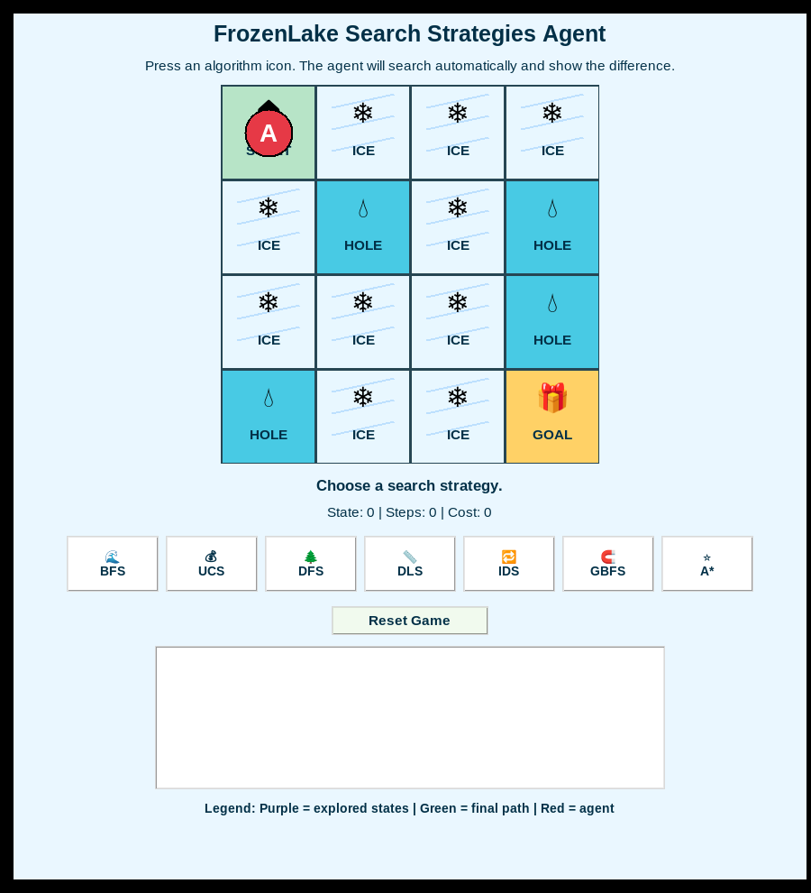
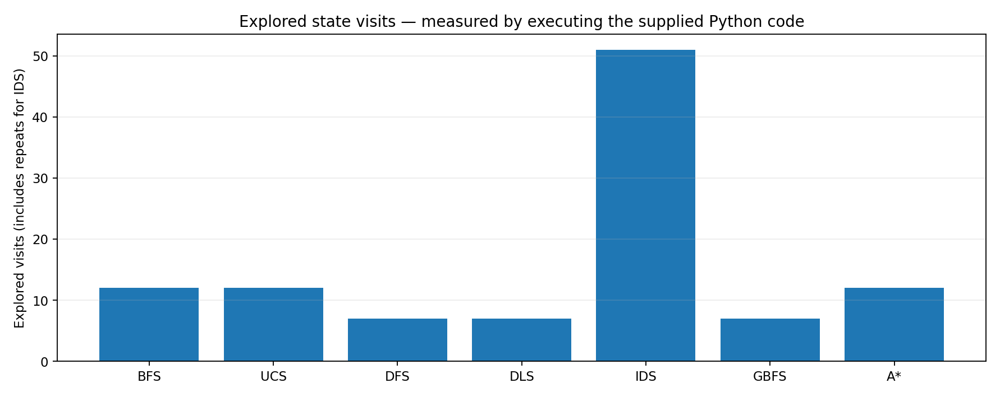

BFS · 12 explored visits
Breadth-First Search
FIFO frontier explores the shallowest available states first. With uniform unit cost, this returns a shortest safe path.
Seven search strategies. One deterministic navigation problem. A real Python/Tkinter implementation that plans a safe route through a 4 × 4 grid, visualizes explored states, and guides an agent from its starting point to the goal.
01 / PROJECT INTRODUCTION
The agent navigates a 4 × 4 FrozenLake map with a known start, a goal, and four forbidden hole positions. The aim is to find a valid sequence of moves without entering a hole. Every valid move has a unit cost; the tested model is deterministic and fully observable.
The original application lets a user choose Breadth-First Search (BFS), Uniform-Cost Search (UCS), Depth-First Search (DFS), Depth-Limited Search (DLS), Iterative Deepening Search (IDS), Greedy Best-First Search (GBFS), or A*. For each method it animates the explored states, highlights the discovered path and finally moves the agent to the goal.
All seven demonstrations below were captured from the running original Tkinter application. GUI animation timing was accelerated for a concise presentation; the source search algorithms were left unchanged. The MP4s are recordings, not mockups.

02 / EXECUTED TKINTER DEMONSTRATIONS
Each recording shows the actual application highlighting visited states, identifying the safe solution, moving the red agent, and completing at the goal. Use play controls or open the individual MP4s. The screenshot links show a recorded goal-stage output.
FIFO frontier explores the shallowest available states first. With uniform unit cost, this returns a shortest safe path.
Always expands the lowest cumulative path cost g(n). Because each move costs one, its result matches BFS.
Uses a stack, exploring one branch deeply before backtracking. The action ordering happens to lead quickly to a safe path.
Depth-first search with an explicit limit of six actions, equal to the solution depth on the supplied map.
Runs repeated depth-limited searches at increasing limits until the goal is found.
Orders the frontier by Manhattan distance h(n) to the goal, without considering accumulated cost.
Uses f(n)=g(n)+h(n), combining the number of steps travelled with Manhattan-distance estimate.
03 / MEASURED RESULTS
Running the original search functions returned the same safe path for each algorithm: 0 → 4 → 8 → 9 → 13 → 14 → 15. The six actions are Down, Down, Right, Down, Right, Right. Below, explored-state counts are recorded visits, not necessarily distinct map cells—particularly for IDS.
| Algorithm | Success | Moves | Cost | Explored visits |
|---|---|---|---|---|
| BFS | Yes | 6 | 6 | 12 |
| UCS | Yes | 6 | 6 | 12 |
| DFS | Yes | 6 | 6 | 7 |
| DLS | Yes | 6 | 6 | 7 |
| IDS | Yes | 6 | 6 | 51 |
| GBFS | Yes | 6 | 6 | 7 |
| A* | Yes | 6 | 6 | 12 |

Action ordering and the simple Manhattan heuristic guide these methods directly toward a safe route on this specific grid. Their seven visits should not be generalized into a guarantee of superior performance.
Iterative deepening searches repeatedly from the start with increasing depth limits. The report and executed code count repeated visits across iterations; this explains its larger exploration count.
With cost one for each move, BFS finds a shortest path, UCS agrees with BFS, and A* uses both g(n) and Manhattan-distance h(n) to balance explored path cost and estimated distance.
This is a deterministic 4 × 4 educational problem, not a stochastic FrozenLake policy-learning benchmark. The results compare one predefined map and one fixed action order, not performance across randomly generated maps.
04 / ORIGINAL PROJECT FILES
Original 16-page project report, including algorithm descriptions and tested results.
Open reportUnmodified main.py implementing seven searches and animated interface.
CSV output from all seven algorithms, plus individual MP4 recordings shown above.
Download results CSVReproduce the GUI locally with Python 3 and a desktop Tkinter installation: python main.py. The source code was not changed to produce the videos.